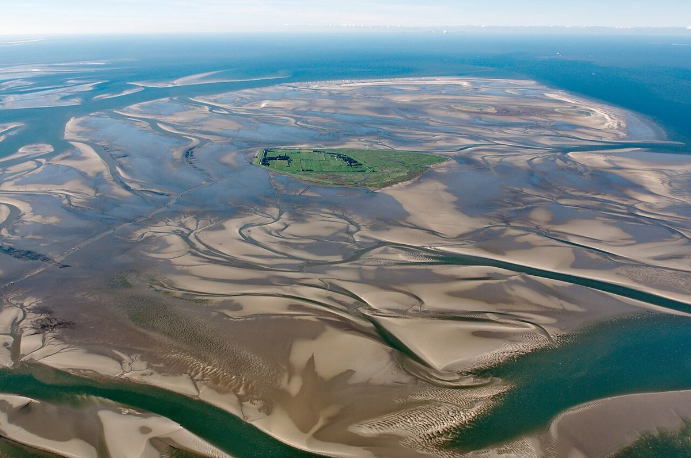

Entdeckungsreise ins Nordsee Wattenmeer: Ein faszinierendes Naturparadies

Das Nordsee Wattenmeer ist ein einzigartiges Naturparadies und gehört seit 2009 zum UNESCO-Weltnaturerbe. Diese faszinierende Landschaft zwischen Ebbe und Flut bietet unvergessliche Erlebnisse für Naturliebhaber, Familien und Abenteurer gleichermaßen. Hier erfährst du alles, was du für einen gelungenen Trip in diese beeindruckende Region wissen musst.
Anreise ins Wattenmeer
Das Wattenmeer erstreckt sich entlang der Nordseeküste in Deutschland, von Niedersachsen über Hamburg bis Schleswig-Holstein. Die Anreise ist bequem mit dem Auto, der Bahn oder auch per Flugzeug möglich. Größere Städte wie Cuxhaven, Wilhelmshaven oder Husum bieten ideale Ausgangspunkte für deine Entdeckungstour.
Die beste Reisezeit
Das Wattenmeer zeigt zu jeder Jahreszeit seinen Charme, doch die ideale Reisezeit liegt zwischen April und Oktober. In diesen Monaten ist das Wetter angenehm, und du kannst viele der typischen Aktivitäten wie Wattwandern, Vogelbeobachtungen oder Ausflüge zu den Seehundbänken genießen. Achte jedoch immer auf die Gezeiten und die Wettervorhersage, um deine Ausflüge sicher zu planen.
Highlights im Wattenmeer
Das Wattenmeer bietet eine Vielzahl an faszinierenden Erlebnissen. Hier sind fünf Highlights, die du nicht verpassen solltest:
- Wattwanderungen: Mit einem erfahrenen Wattführer kannst du die einzigartige Flora und Fauna des Wattenmeers erkunden. Dabei erfährst du viel Wissenswertes über Muscheln, Wattwürmer und die Bedeutung dieses Lebensraums.
- Seehundbänke: Bei einer Bootstour kannst du die Seehunde in ihrer natürlichen Umgebung beobachten. Ein unvergessliches Erlebnis, besonders für Kinder!
- Nationalpark-Häuser: Besuche eines der vielen Nationalpark-Häuser, wie das Multimar Wattforum in Tönning. Hier gibt es interaktive Ausstellungen und Aquarien, die die Besonderheiten des Wattenmeers anschaulich darstellen.
- Vogelbeobachtung: Das Wattenmeer ist ein wichtiger Rastplatz für Zugvögel. Besonders in der Zugzeit kannst du hier seltene Vogelarten entdecken.
- Leuchttürme: Die Leuchttürme entlang der Küste sind nicht nur wichtige Orientierungspunkte, sondern bieten auch atemberaubende Aussichten auf das Wattenmeer und die Nordsee.
Kulinarische Köstlichkeiten
Ein Besuch im Wattenmeer ist nicht komplett ohne die regionalen Spezialitäten zu probieren. Frischer Fisch, insbesondere Matjes, Krabben und Scholle, stehen hier ganz oben auf der Speisekarte. Probier unbedingt auch die berühmte „Nordsee-Grütze“, eine traditionelle Süßspeise mit Beeren und Sahne. In den kleinen Hafenstädten findest du gemütliche Restaurants, in denen du diese Köstlichkeiten genießen kannst.
Nachhaltigkeit im Wattenmeer
Das Wattenmeer ist ein empfindliches Ökosystem, dessen Schutz für uns alle eine große Verantwortung darstellt. Achte darauf, die Natur zu respektieren: halte Abstand zu den Tieren, nimm deinen Müll mit und folge den Anweisungen der Ranger und Wattführer. Nur so können wir dieses einzigartige Naturparadies für zukünftige Generationen erhalten.
Fazit
Das Nordsee Wattenmeer ist ein Ort der Ruhe, der Entdeckung und der unberührten Natur. Ob bei einer Wattwanderung, einer Bootstour zu den Seehundbänken oder einem gemütlichen Abendessen mit frischem Fisch – hier findest du einzigartige Erlebnisse, die du so schnell nicht vergessen wirst. Pack deine Sachen und mach dich auf den Weg ins Wattenmeer – Abenteuer und Entspannung pur erwarten dich!
Haiktec
- 7 Erfolgsstrategien für kleine Restaurants und Cafés: Mehr Gäste, mehr Umsatz
- Schwarzwald-Reisekosten-Tracker & Aktivitäten-Planer für internationale Gäste
- Saarland & Mosel Entdecker: 7 Einfache Schritte zu Verborgenen Juwelen und Lokalen Geheimtipps
Text mit KI erstellt und automatisch geprueft.